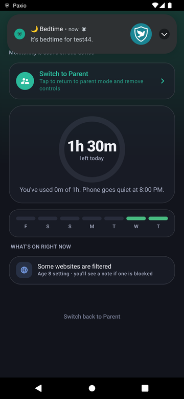

On a device set to "This is my child's phone," or a shared device switched into
child view, Paxio shows a single, read-only dashboard instead of the full parent app — no controls
to change, just a clear picture of today.
The dashboard
A time-left ring shows minutes remaining today, plus how much has been used and when the phone goes quiet for bedtime.
A 7-day streak row marks each day under the limit — the same streak the "one more clean day earns bonus time" note on Overview refers to.
"What's on right now" lists active restrictions in plain language, e.g. "Some websites are filtered — Age 8 setting."
Active alerts, like a bedtime notice, appear at the top of the screen.

The child dashboard.
Switching back to parent mode
A "Switch to Parent" or "Switch back to Parent" link sits on this
screen (on a shared device) — tapping it always asks for the parent PIN first. This is deliberate:
without a PIN gate here, anyone holding the child's device could reach the full parent dashboard with
no authentication at all.